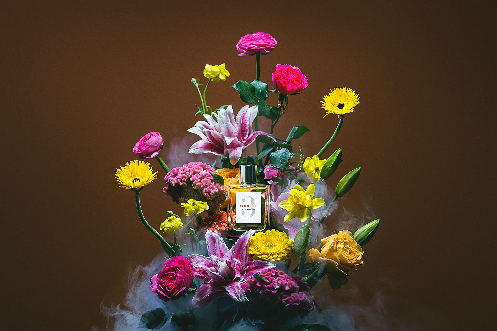

Sceut
香氣，從這裡開始。
香水照片展示區

==$0香水介紹
- Top Notes: 佛手柑、馬鞭草、覆盆子
- Middle Notes: 玫瑰、茉莉、白花香氣
- Base Notes: 檀香木、麝香、馬林糖
ANNICKE No.3 是 Eight & Bob 經典女性香氛線中的代表作之一。從命名到氣味結構，它延續了品牌一貫的敘事方式：以人物為靈感，以情感與記憶為軸心，將女性氣質描摹為一種不需要張揚、卻能留下深刻印象的存在。ANNICKE No.3 像是一幅描繪現代優雅女性的氣味肖像：明亮果香作為開場，細膩白花鋪陳核心，最後由柔軟而溫潤的木質與甜潤質地收尾，展現出既精緻又富有親和力的女性魅力。它呈現出一種非常現代的女性香氣表情：柔美，但同樣堅韌；甜潤，卻不失結構。
品牌介紹
Eight & Bob 是一個以傳承、優雅與高級工藝為核心的精品香氛品牌。品牌的世界觀建立於 20 世紀早期歐洲上流社會的生活方式之上，將旅行、私密記憶、藝術修養與法式品味，轉化為一系列具有歷史質感與現代精準度的香氛作品，也因此品牌的香水總是帶有一種屬於舊日歐洲的從容與修養。創始人 Albert Fouquet 出身巴黎上流圈、具備高度審美與調香天賦，他以僅為自己私人使用而創作香水聞名，作品原本只在特定圈層中流傳。在 1937 年夏日的某天，他在法國蔚藍海岸與年輕的甘迺迪相遇，後者對他的個人香氣深受吸引，並提出那句後來成為品牌傳奇的請求：希望得到「eight samples and, if possible, another one for Bob」。這段軼事不僅成為品牌名稱的由來，也奠定了 Eight & Bob 的品牌精神——不在於追逐短暫潮流，而在於將 歷史、工藝與當代精緻感融合為一種可穿戴的生活美學。
回饋我們
若您有任何建議或心得，歡迎至訂單系統中回饋，讓 Sceut 更加貼近您的感受。
追蹤我們
Follow us on Instagram: @sceut_tw